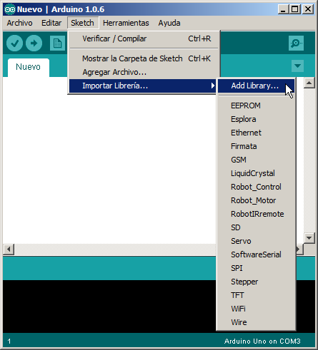
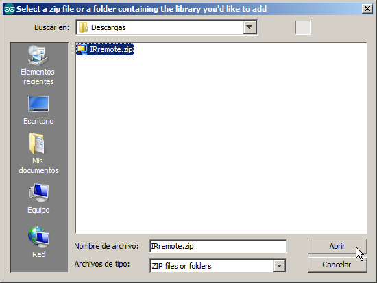
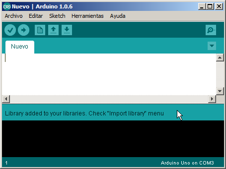
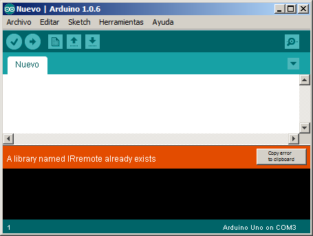
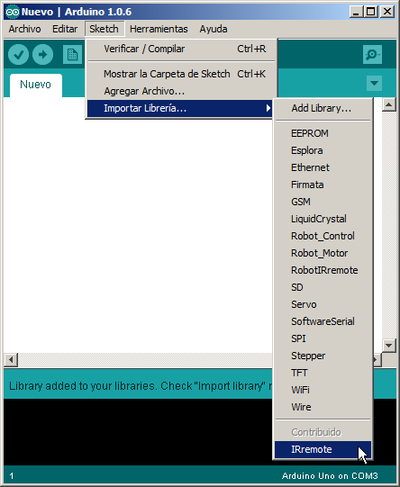
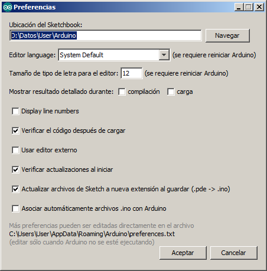
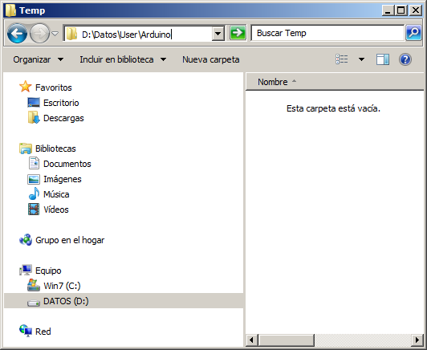
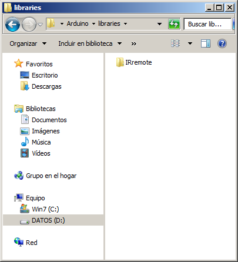

Afegiu una llibreria a Arduino¶
L’entorn d’Arduino ve per defecte amb les llibreries més comunes. Però, de vegades, és necessari afegir una llibreria nova perquè Arduino pugui gestionar altres dispositius com ara panells TFT o emissors i receptors d’infrarojos. Aquesta pàgina explica pas a pas com afegir una llibreria nova o com actualitzar una llibreria existent a l’entorn gràfic d’Arduino.
Afegiu una llibreria nova a Arduino¶
Copieu la biblioteca en format *. Zip a un conegut directori del disc dur.
Obrir l’entorn gràfic d’Arduino.
Al menú Arduino, seleccioneu `` Programa ... Inclou la llibreria ... Afegeix la llibreria .zip ... ``

Cerqueu el directori del disc dur on es troba la llibreria
Seleccioneu el *. Arxiu Zip amb la llibreria i premeu [Obrir]

Si la llibreria s'ha importat correctament, apareixerà un missatge informant -ne. "Biblioteca afegida a les vostres biblioteques."

En el cas que la llibreria ja estava instal·lada, apareixerà un missatge d’error amb color taronja que indica que la llibreria ja existeix. "Un nom de la biblioteca _ _ _ ja existeix".
Si voleu actualitzar la llibreria, cal eliminar primer la llibreria antiga.

Comproveu que Arduino tingui la nova llibreria a la llista de llibreries instal·lades.
`` Programa ... Inclou la llibreria ...`

Suprimeix una llibreria Arduino¶
Per actualitzar una llibreria que ja està instal·lada a l’entorn Arduino, cal eliminar l’antiga llibreria abans. Aquests són els passos a seguir:
Seleccioneu al fitxer `` preferències ... ``
També podeu prémer les tecles [ctrl] + comes
Copieu la ruta "Ubicació del llibre d'esbossos" fent clic a [Ctrl] + C

A l'explorador de fitxers, enganxeu la ruta copiada i premeu Enter.

A l'Explorador, dins de la ruta del quadern de dibuixos, seleccioneu la carpeta Arduino ... biblioteques ...
En aquesta ubicació podeu veure les llibreries instal·lades actualment.

Seleccioneu la biblioteca que vulgueu suprimir i premeu el suprimir o premeu el botó dret del ratolí i "suprimiu"
Consulteu les biblioteques instal·lades a Arduino¶
Per veure quines biblioteques, Arduino ja és necessari seleccionar al menú.
`` Programa ... Inclou la llibreria ...`